Checking a condition more than once
Gregory S. DeLozier, PhD
while, break, and continue
become keywords.
i = 0;
while (i < 3) {
print(i);
i = i + 1;
}Prints 0, 1,
2.
| Check | i before |
Condition | Runs body? |
|---|---|---|---|
| 1st | 0 | true | yes |
| 2nd | 1 | true | yes |
| 3rd | 2 | true | yes |
| 4th | 3 | false | no |
One more check than iterations.
Condition: i < 3 — checked before
every pass.
Body: print(i) — what runs while it
holds.
Update: i = i + 1 — what changes before
the next check.
n = 5;
sum = 0;
k = 1;
while (k <= n) {
sum = sum + k;
k = k + 1;
}sum ends at 15.
letters = "";
j = 0;
while (j < 3) {
letters = letters + "x";
j = j + 1;
}letters ends at "xxx".
def parse_while_statement(tokens):
tokens = require(tokens, "while", "Expected 'while'")
tokens = require(tokens, "(", "Expected '(' after 'while'")
condition, tokens = parse_expression(tokens)
tokens = require(tokens, ")", "Expected ')' after while condition")
body, tokens = parse_block(tokens)
return {"tag": "while", "condition": condition,
"body": body}, tokensbreak_statement ::= "break"
continue_statement ::= "continue"No condition, no argument, no block.
if ast["tag"] == "while":
while True:
condition, status = evaluate(ast["condition"], environment)
if status is not None:
return condition, status
if not condition:
return None, None
value, status = evaluate(ast["body"], environment)
if status == "break":
return None, None
if status is not None and status != "continue":
return value, status

Three outcomes, one box each.
found = 0;
search = 0;
while (true) {
search = search + 1;
if (search == 4) {
break;
};
found = search;
}search ends at 4.
found ends at 3.
total = 0;
m = 0;
while (m < 5) {
m = m + 1;
if (m == 3) {
continue;
};
total = total + m;
}total ends at 12: skips
3.
outer = 0;
combined = 0;
while (outer < 2) {
outer = outer + 1;
inner = 0;
while (true) {
inner = inner + 1;
if (inner == 2) { break; };
combined = combined + 1;
};
combined = combined + 10;
}combined ends at 22.
if status == "exit":
sys.exit(value)
if status is not None:
raise ValueError(f"Unhandled evaluation status: {status}")Diagnosed at evaluation, not parsing.
Zero, one, and repeated iterations; the boolean-condition requirement.
break and continue skipping later body statements.
continue reevaluating the condition exactly once, checked by mocked input() call count.
Nested loops; exit and a failed assertion propagating out of a loop body.
guess = (guess + S / guess) / 2;Newton’s method for square roots, in one line.
Why must continue return to the condition rather than directly to the body?
Which changes to loop state establish progress toward termination?
Why does an inner loop consume break but propagate exit?